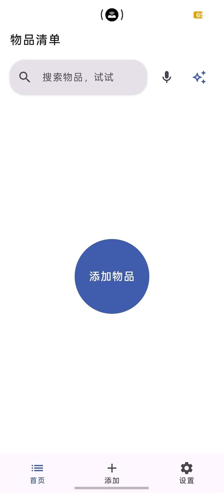
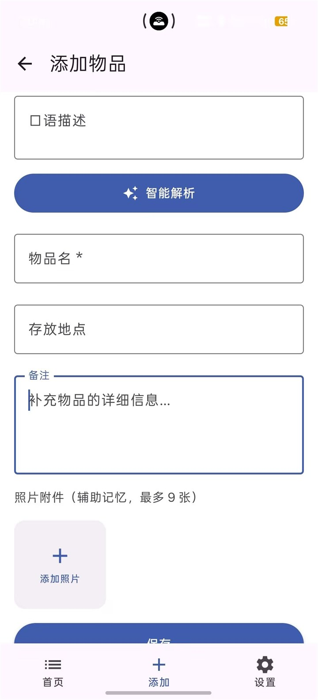

Android 应用
智能收纳助手
用文字、键盘语音和照片记录物品放在哪里，需要时再快速找回来。
v1.2.0 已发布
实践过程与限制
实践过程项目已经完成 v1.2.0 的发布记录和连续版本迭代。发布后的少数体验返修仍在补齐逐项真机证据，因此这里分别说明“版本已发布”和“测试范围”，不用一个状态概括全部。
当前限制AI 图片理解默认关闭，首次使用需要配置可用的模型服务；不同设备和模型服务之间仍可能存在实际差异。


从身边的问题开始。
Android 应用
用文字、键盘语音和照片记录物品放在哪里，需要时再快速找回来。
v1.2.0 已发布
实践过程项目已经完成 v1.2.0 的发布记录和连续版本迭代。发布后的少数体验返修仍在补齐逐项真机证据，因此这里分别说明“版本已发布”和“测试范围”，不用一个状态概括全部。
当前限制AI 图片理解默认关闭，首次使用需要配置可用的模型服务；不同设备和模型服务之间仍可能存在实际差异。


个人知识工作流
连接电脑知识库与手机编辑：Google Docs 随手改，Obsidian 继续做唯一主库。
已在实际学习记录中使用
实践过程2026-09-23 的真实记录中，多份笔记连续完成了手机端到本地、再反向刷新的处理，State、Registry 和完成回执保持一致。脚本、镜像、Mobile 与跨语言规范化测试均通过。
当前限制流程依赖本机 PowerShell、Google Drive 和已配置的 Apps Script。5 分钟定时触发器是否正式启用仍需单独确认，因此这里不把它描述成已经验证的无值守服务。
开发实践
把开发拆给 Coordinator、UI、AI、Data 四个角色，各自在独立 worktree 工作，再由主控整合。
已在真实项目中持续迭代
实践过程这套流程来自智能收纳助手的真实协作记录：角色拥有长期工作区，但任务仍需经过任务卡、提交、测试和 Review 完成交接。
当前限制独立 worktree 只能减少互相覆盖，不会自动消除接口冲突、共享文件竞争和集成错误；合并、发布与高风险操作仍需明确授权。
不太完美，但真实。
还没有发布构建日志。
这里会留下每一次尝试、取舍，以及下一步。
边学边做，持续往后翻。